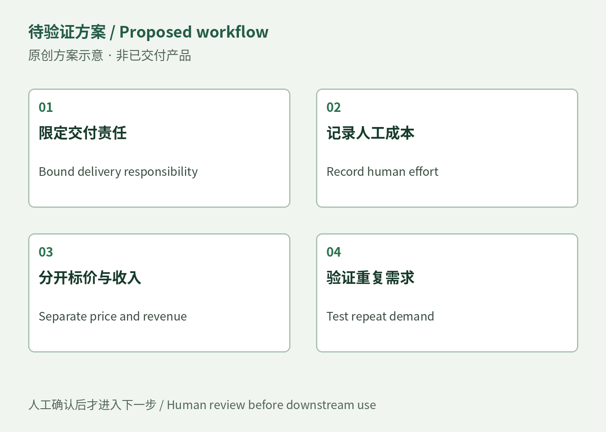

客户买的是不同责任
Designpixil展示AI与B2B产品设计案例，并承诺很快交付首批Figma设计；这些是卖方描述。Content Snare把请求数量、用户、提醒和审批列进套餐，是软件能力边界。两者都可能出现在同一服务流程，但购买门户不会自动带来研究判断，购买设计容量也不等于获得无限项目管理。不能用一个高价服务标价减低价软件费，就声称剩下都是利润。
商业对标 / Business comparators · 观察／待验证判断

Designpixil展示AI与B2B产品设计案例，并承诺很快交付首批Figma设计；这些是卖方描述。Content Snare把请求数量、用户、提醒和审批列进套餐，是软件能力边界。两者都可能出现在同一服务流程，但购买门户不会自动带来研究判断，购买设计容量也不等于获得无限项目管理。不能用一个高价服务标价减低价软件费，就声称剩下都是利润。
公开案例支持存在具体交付样式，不能验证发票、续费、净利润或客户数。潜在触达渠道包括公开采购和需要外部设计支持的产品团队，但本次没有联系、名单规模或成交率。最小服务可以限定一条流程、一组原型和一次交接，合同外改动另行报价；这些是可测试的包装建议，不能描述为对标公司的实际合同条款。
用真实获准试单记录研究、制作、沟通、返工和维护工时，收入只计已接受报价和实际付款，工具按所需套餐及周期计。保守、正常、繁忙情景应改变案件数与返工时间，而不是套用统一转化率。若没有重复需求、交付无法限定或售后挤掉下一单，应停止扩大。当前没有这些运营数据，因此保留为商业结构对标，而不是成功收入故事。